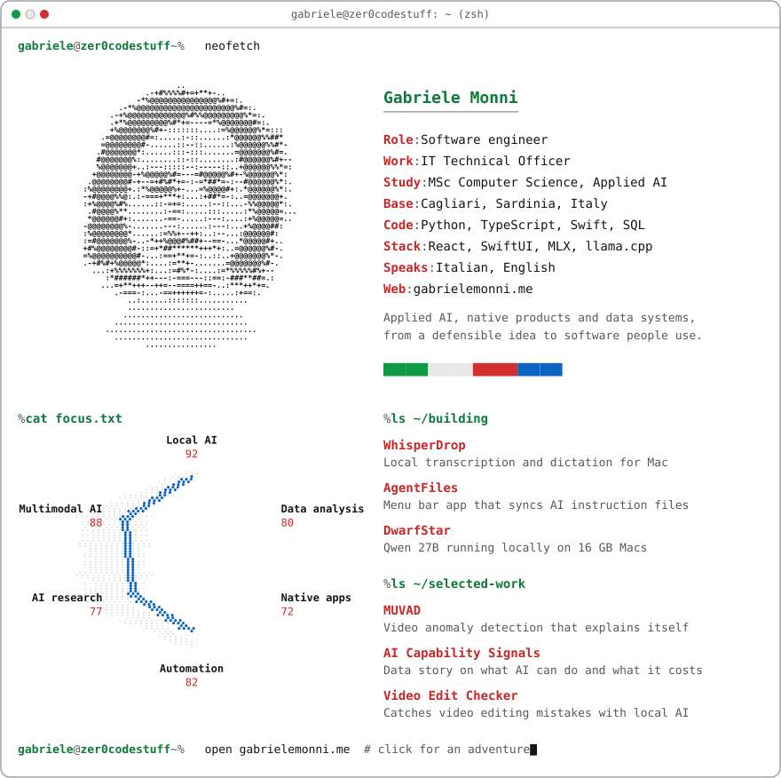
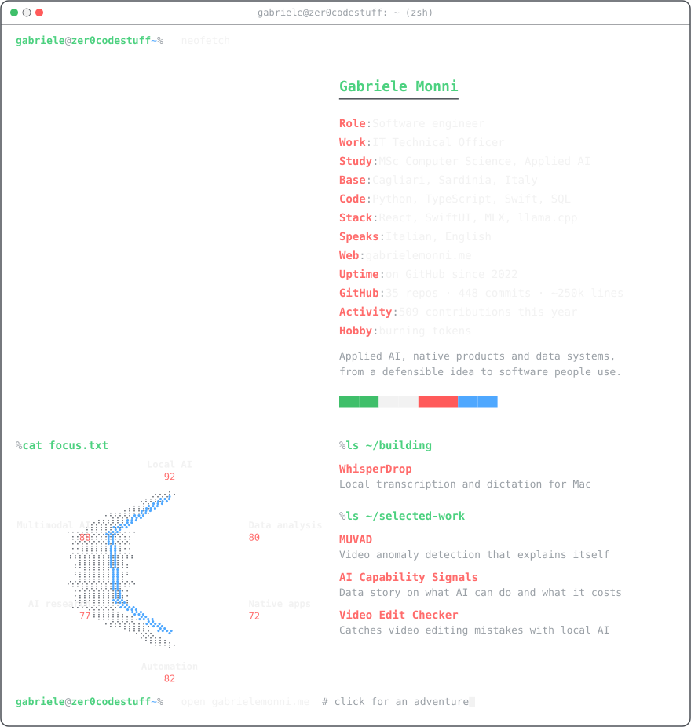
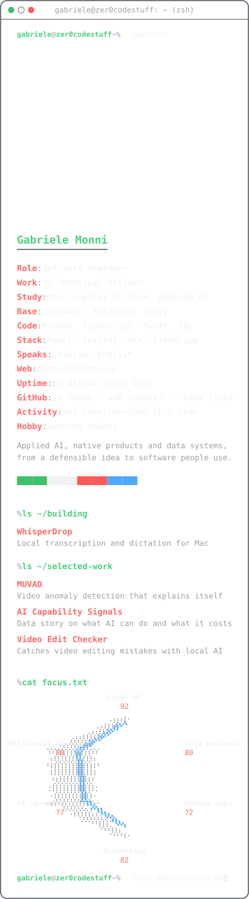
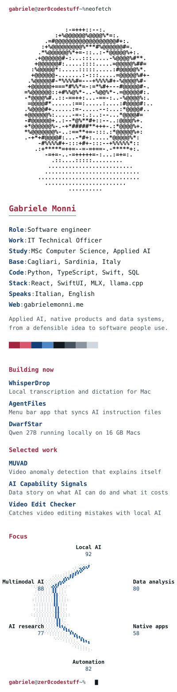

<!doctype html>
<html lang="en">
<meta charset="utf-8">
<meta name="viewport" content="width=device-width, initial-scale=1">
<title>Gabriele Monni | GitHub profile preview</title>
<style>
:root { color-scheme: light dark; font: 14px/1.5 ui-monospace, Menlo, monospace; }
* { box-sizing: border-box; }
body { margin: 0; background: #fff; color: #1f2328; }
@media (prefers-color-scheme: dark) { body { background: #0d1117; color: #e6edf3; } }
main { max-width: 846px; margin: 32px auto; padding: 0 16px; }
picture, img { display: block; max-width: 100%; height: auto; }
h2 { font-size: 13px; font-weight: 600; margin: 48px 0 8px; opacity: .7; }
.grid { display: flex; flex-wrap: wrap; gap: 16px; align-items: flex-start; max-width: none; }
.tile { padding: 16px; border-radius: 6px; }
.dark { background: #0d1117; }
.light { background: #fff; outline: 1px solid #d0d7de; }
</style>
<main>
  <!-- Same markup as README.md: follows the system theme and the window width. -->
  <picture>
    <source media="(prefers-color-scheme: dark) and (max-width: 600px)" srcset="assets/profile-dark-mobile.svg">
    <source media="(prefers-color-scheme: dark)" srcset="assets/profile-dark.svg">
    <source media="(max-width: 600px)" srcset="assets/profile-light-mobile.svg">
    
  </picture>
</main>
<main class="grid">
  <h2 style="width:100%">All four assets</h2>
  <div class="tile dark"></div>
  <div class="tile light"></div>
  <div class="tile dark"></div>
  <div class="tile light"></div>
</main>
</html>
